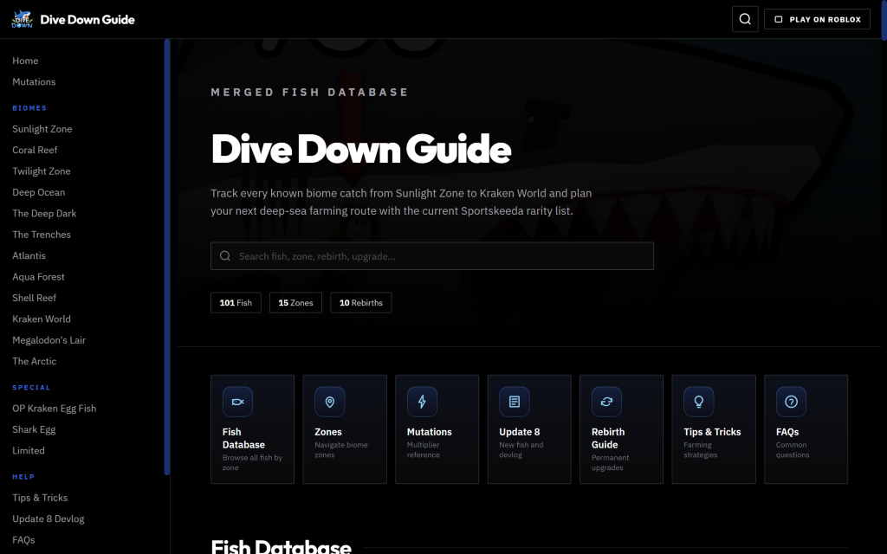
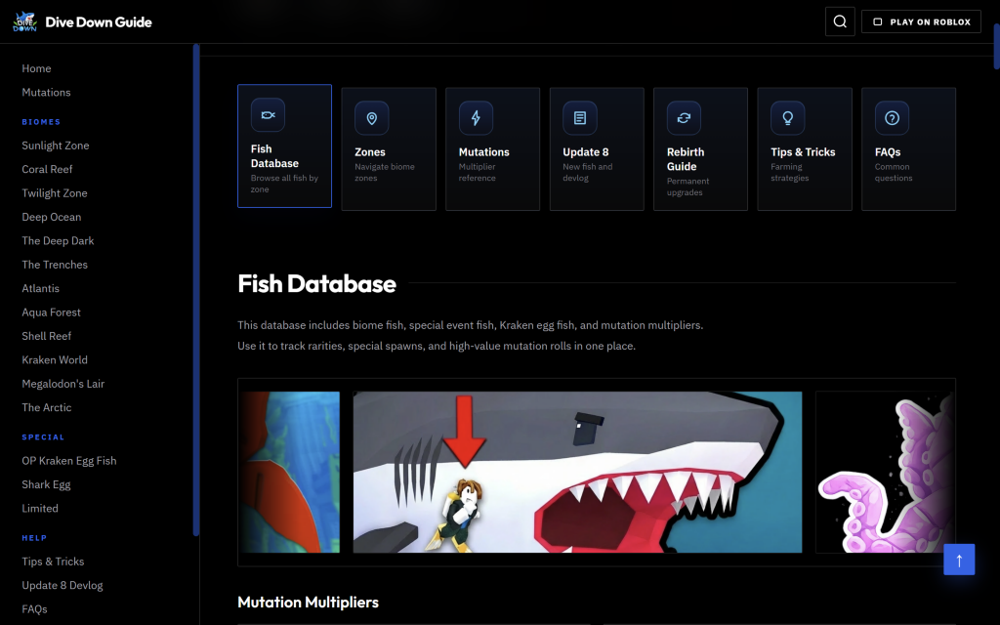
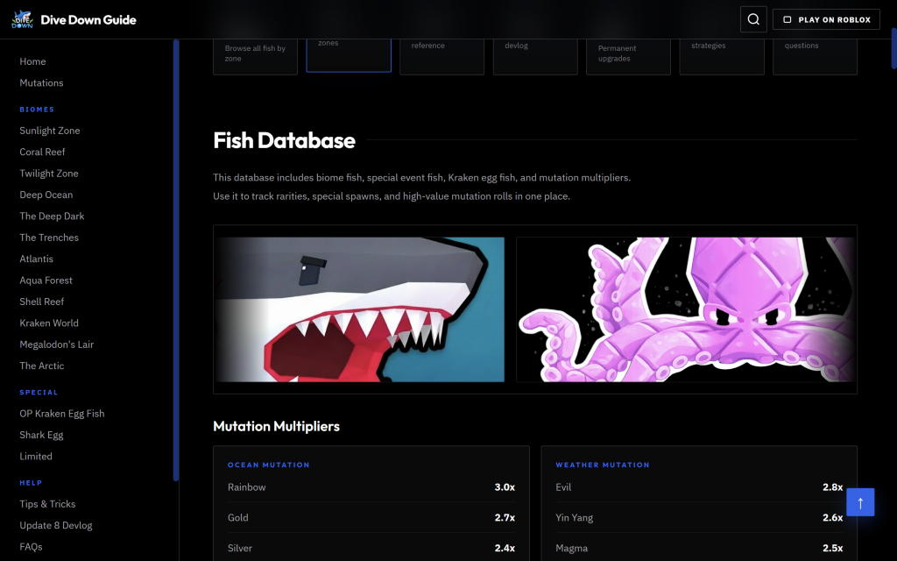
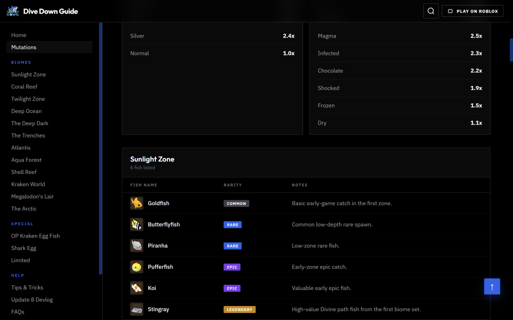
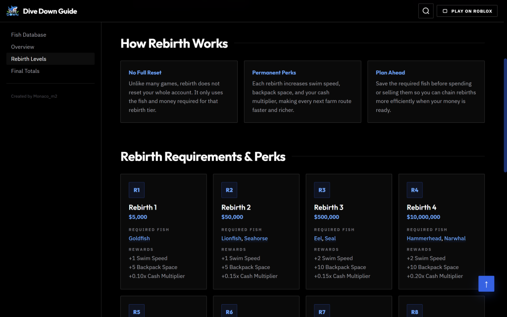
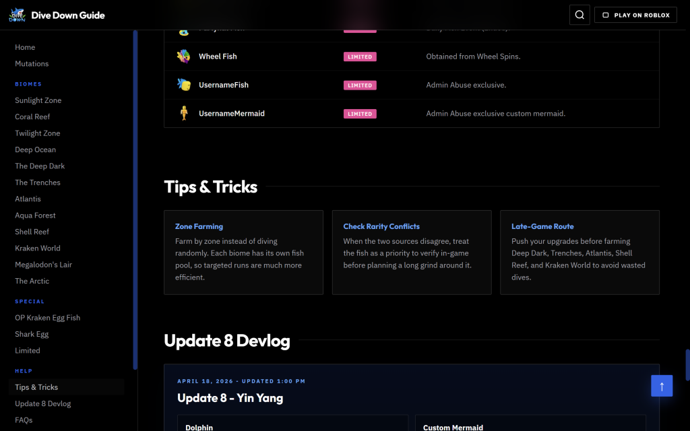
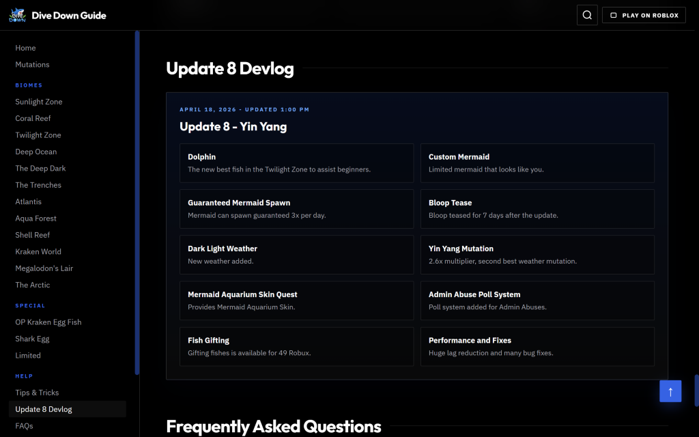
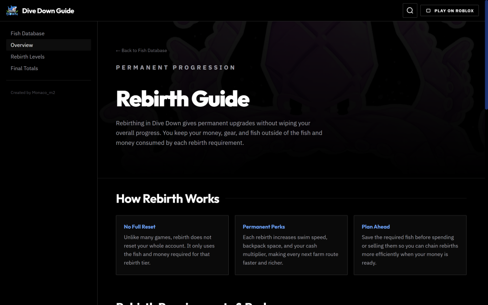

What Dive Down Guide Is
A single-page web reference combining a merged fish database, biome zone directory, mutation multiplier charts, a 10-tier Rebirth planner, farming strategies, Update 8 devlog notes, and an interactive FAQ accordion.
Case Study · Web Application / Gaming Guide
A Centralized Gaming Knowledge Platform
A centralized web reference built for Roblox Dive Down players—bringing together fish rarity tables, biome locations, Ocean and Weather mutation multipliers, Rebirth upgrade tiers, farming tips, and Update 8 patch documentation in one structured interface.

Dive Down Guide is an independent knowledge hub for the Roblox underwater fishing and progression game Dive Down, designed to make mid-session reference lookup fast and consistent.
A single-page web reference combining a merged fish database, biome zone directory, mutation multiplier charts, a 10-tier Rebirth planner, farming strategies, Update 8 devlog notes, and an interactive FAQ accordion.
To give players one reliable place to check catch locations, rarity tiers (aligned with the Sportskeeda rarity list), and progression costs without switching between scattered threads, videos, or unorganized notes.
Structuring fragmented game mechanics into a predictable, category-driven reference system.
Gaming information is scattered across multiple sources, making it difficult for players to find reliable references for fish rarity, biome locations, mutation values, and progression requirements.
A centralized information platform that organizes these resources into dedicated categories with clear navigation—pairing persistent sidebar links with quick-access cards and live fish-name lookup.
Every core module observed on the live Dive Down Guide site, documented with its real interface screenshot and gameplay purpose.
Displays 101 documented fish across 15 tables with Fish Name (paired with PNG fish icons), color-coded Rarity badges, and Notes, alongside an auto-scrolling visual gallery strip.

Organizes catches into 12 biome sections—from Sunlight Zone and Coral Reef through Kraken World, Megalodon's Lair, and The Arctic—plus 3 special tables (OP Kraken Egg Fish, Shark Egg, and Limited).

Separates multipliers into two clean reference cards: Ocean Mutation (Rainbow 3.0x, Gold 2.7x, Silver 2.4x, Normal 1.0x) and Weather Mutation (Evil 2.8x, Yin Yang 2.6x, down to Dry 1.1x).

Switches into a dedicated in-page view detailing No Full Reset, Permanent Perks, and Plan Ahead principles, followed by all 10 tiers (R1–R10, from $5,000 + Goldfish to $500,000,000,000 + Licklid & Shoober) and cumulative totals (Swim Speed +28, Backpack Space +225, Cash Multiplier +2.25x).

A concise 3-card strategy block covering Zone Farming, Check Rarity Conflicts (flagging discrepancies between sources for in-game verification), and Late-Game Route planning.

Documents Update 8 - Yin Yang (dated April 18, 2026 • Updated 1:00 PM) with 10 structured patch notes including Dolphin, Custom Mermaid, Yin Yang Mutation, Dark Light Weather, Admin Abuse Poll System, and Fish Gifting.

Combines a persistent left sidebar (12 biome anchors, 3 special anchors, Help links, and Rebirth Guide switch), 7 hero quick-nav cards, a sticky header search toggle, and a live fish-name autocomplete dropdown that scrolls straight to the matching row with a temporary highlight.
A flat, predictable hierarchy separating reference catalogs from progression planning and patch documentation.
How this structure helps players: High-frequency lookups (fish tables, zones, and mutations) live on the main scrollable page with direct sidebar anchors, while multi-step progression planning (Rebirth Guide) switches cleanly into a focused view with its own section navigation and a one-click Back to Fish Database return path.
Connecting reference lookup directly to in-game farming and rebirth decisions.
Players land on the hero overview, see the 101 Fish / 15 Zones / 10 Rebirths scope, and orient via the 7 quick-nav cards.
Players type a target fish name in the hero or header search bar, or click a biome anchor in the left sidebar to jump straight to that zone.
Players review the highlighted row's rarity badge, zone notes, and Ocean/Weather mutation multipliers to judge catch value.
Players switch to the Rebirth Guide view to check cash and fish requirements for their next tier and review farming tips.
Armed with target biomes and rebirth prerequisites, players launch Dive Down on Roblox via the top header CTA and farm efficiently.
Unaltered screenshots captured directly from the live Dive Down Guide deployment.

Competencies demonstrated and a transparent boundary between live interactive features and static reference content.
Implemented Client-Side Functionality: Live fish-name search dropdown (both hero and toggled header inputs) with smooth scroll-to-row highlighting, SPA view switching between the main guide and the Rebirth Guide, a 9-item FAQ accordion, and a floating scroll-to-top control—hosted as a static site on GitHub Pages.
Documented Reference Content: Static zone fish tables (101 entries across 15 tables, without column sorting or rarity filter controls), Ocean & Weather mutation cards, Rebirth R1–R10 requirements, Tips & Tricks, and Update 8 devlog notes. No backend database or live user analytics are claimed.
Why structure, clarity, and honest documentation matter in community-focused web products.
Transforming scattered game mechanics into a structured knowledge platform proves that good information design can deliver immediate value without heavy infrastructure. Players do not need flashy dashboards when trying to check a fish's biome or calculate a rebirth requirement—they need predictable categories, scannable tables, and fast navigation.
Equally important is transparency: clearly distinguishing between verified rarity data, potential source conflicts, and what a search bar actually indexes builds long-term trust with the community. By prioritizing hierarchy, readability, and user-focused organization, Dive Down Guide turns fragmented notes into a practical companion for everyday gameplay.